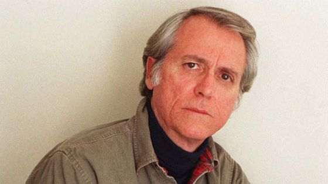

Don Delillo [Sinh 1936]
Ông không có địa chỉ e.mail, không có mô-dem để nối mạng Internet. Nói tóm lại, ông không có cả chiếc máy vi tính và cũng không có cả số điện thoại trên danh sách đỏ. Với một sự ngại ngùng có tính bệnh hoạn, rất ít khi ông để cho người ta phỏng vấn, không chịu nói tên cái thành phố mà ông đang ở ẩn, một khu ngoại ô rợp bóng cây phía Bắc thành phố New York. Kể ra thì cũng phải thôi nếu như ông cho phép in ảnh của mình lên bìa sau những cuốn sách của mình. Kể từ khi ông đoạt giải thưởng sách quốc gia, giải văn học hàng năm hàng đầu của Mỹ, cách đây đã 15 năm rồi, vốn dĩ người ta không thể nói rằng ông là một kẻ vô danh.
Don Delillo [Sinh 1936] có thể nhẩm tính là đã viết ra đến 11 thiên tiểu thuyết, trong đó có những cuốn như Americana, Bruit de fond (Tiếng át), Chien Galeux (Chó ghẻ),… nhưng vẫn là một nhà văn kín tiếng, chỉ muốn sống một cuộc đời đạm bạc bên cạnh người vợ, một nhà kiến trúc kiêm họa sĩ vẽ phong cảnh. Thật hoàn toàn không phải là ngẫu nhiên khi một nhân vật trong một thiên truyện của ông lại khiến người ta có thể nhận lầm đấy là J.D.Salinger, tác giả huyền thoại của cuốn L’Attrape-coeurs(Bẫy tình), người đã hơn 30 năm sống trong rừng sâu, giam mình trong chiếc chòi người săn bẫy thú rừng.
Ở tuổi 63, Don Delillo cuối cùng đã bị các phương tiện truyền thông chộp được sau khi ông đã không ngừng chơi các trò trốn tìm với chúng. Việc xuất hiện năm 1997, cuốn Outremonde (Thế giới bên kia), thiên truyện mà ông được nhà xuất bản ứng trước một triệu USD và cả quyền chuyển thể thành kịch bản điện ảnh, đã làm cho tác giả trở thành một ngôi sao, ngang hàng với những tên tuổi lẫy lừng như Thomas Pynchon, Saul Bellow hay John Updike. Từ đó, người con của một gia đình Italia nhập cư, ra đời ở Bronx, một khu ngoại ô của New York và lớn lên cùng những người tín đồ công giáo phái Dòng Tên, đã buộc phải chấp nhận địa vị của một nhà văn lớn, điều mà ông vừa có thái độ “kính nhi viễn chi”, vừa coi là một thú vui.
Câu chuyện Outremonde mở đầu vào ngày 3/10/1951, trong một trận đấu bóng bầu dục giữa đội New York Giants và Brooklyn Dodgers. Ngồi lẫn trên các bậc ghế của khán giả, một gã đàn ông - Edgar Hoover, ông trùm của FBI (Cảnh sát Liên bang) lo lắng: Ông ta vừa được tin rằng Liên Xô vừa cho nổ thử trái bom hạt nhân đầu tiên. Mặc dầu sân vận động nổ bùng lên niềm vui trước chiến thắng của Giants - các chàng trai khổng lồ - và trong khi một chú thiếu niên cướp được quả bóng của trận đấu, Hoover mặt cứ quạu lại. Ông ta là người duy nhất biết được rằng thế giới vừa bước vào một cuộc chiến tranh lạnh.
Từ điều đó, Don Delillo lao vào việc khơi dậy nước Mỹ của cái thời điên cuồng đã qua, theo cái cách khiến người ta nhớ lại nghệ thuật đồng hiện của Jules Romains và những thủ pháp của John Dos Passos. Những nhân vật lịch sử, những kẻ vô danh và những nhân vật tưởng tượng chạm trán nhau, theo dõi nhau, gặp nhau lại, yêu nhau hay chia tay nhau trong thiên truyện mà những thời đại và những số phận đan kết ràng rịt với nhau. Tác giả đã đi ngược dòng thời gian. Mọi thứ đều diễn ra ở đấy: Sự thống trị của thông tin và các phương tiện truyền thông, sự cô đơn của mỗi cá nhân và cái chứng hoang tưởng của đám đông, đức tin Công giáo và cuộc khủng hoảng tên lửa ở Cu Ba, ma túy và tình dục, các cuộc chiến tranh Triều Tiên và Việt Nam, điện ảnh, quảng cáo, vũ trường đen và trắng của Truman Capote, những kẻ giết người hàng loạt, những phác thảo hài hước của Lenni Bruce, khu Bronx và ngành công nghiệp chất thải. Ông cũng không quên vụ mất điện ngày 9/11/1965, những điếu thuốc lá Lucky Strike và một người thuật truyện có tên là Nick Shay, mà tham vọng của anh ta là tìm lại cho kỳ được trái bóng chiến thắng của đội Giants. Chuyền tay từ người nọ đến người kia, trái bóng này trở thành sợi dây dẫn dắt người ta trong cái mê lộ đó của thời cuộc.
Trong số những lời tán dương đủ loại, tác giả Outremonde được đánh giá là “Walt Whitman của thế kỷ XX”. Thực thế và cũng đúng là do Don Delillo đã miêu tả một thực tế khủng khiếp đôi khi như là hình ảnh của địa ngục. Tác giả đã tạo ra một bức tranh xã hội chịu những tác động dây chuyền kiểu Romains và Dos Passos, một sáng tạo thực sự và nên thơ của một tác phẩm đã trở thành một hiện tượng văn học, trong đó phần lớn những huyền thoại đã tạo ra nước Mỹ trong nửa thế kỷ này được tung hô, kiểm định và được liệt kê ra trên 900 trang giấy.